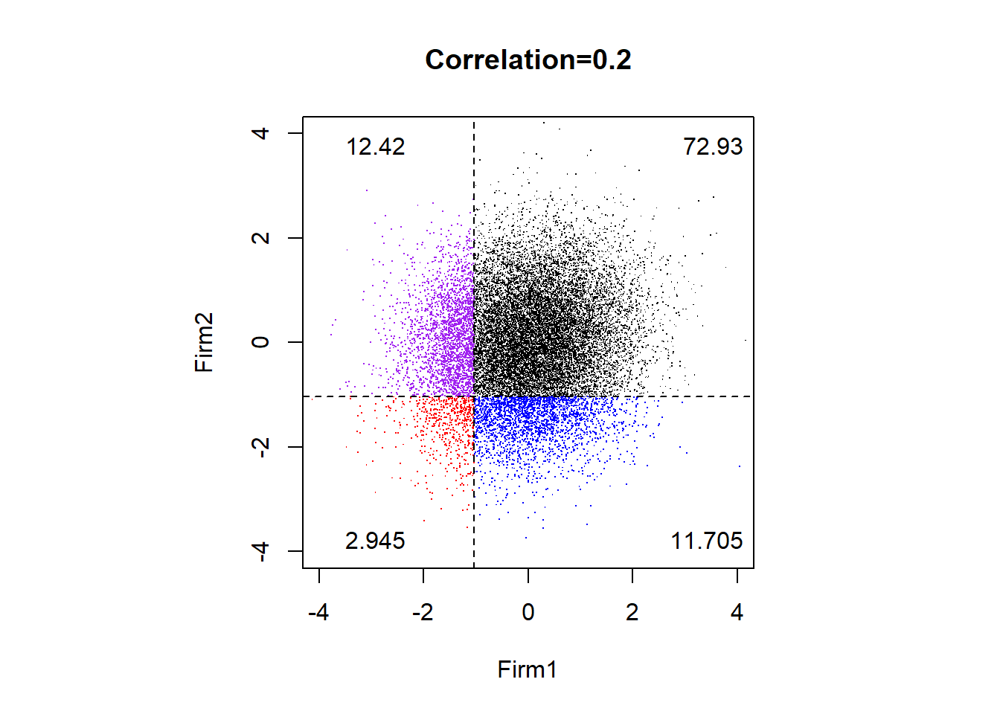
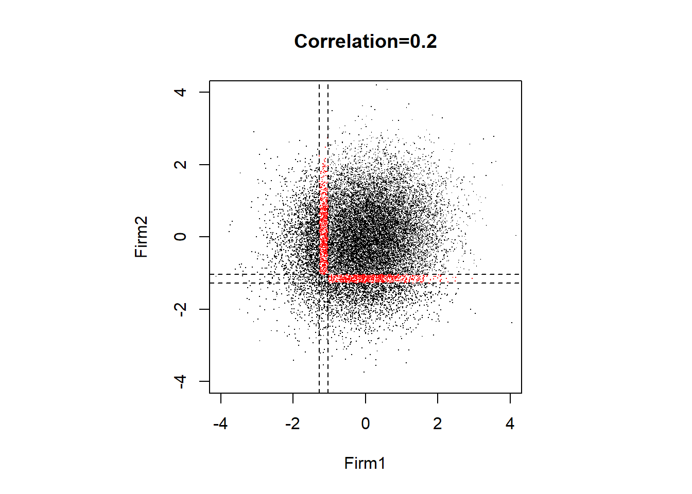
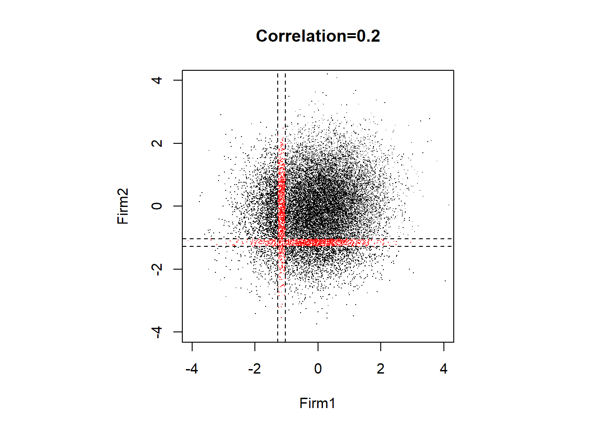

3 The Gaussian copula model.
Copulas allow us to decompose a joint probability distribution into their marginals (which by definition have no correlation) and a function which couples (hence the name) them together and thus allows us to specify the correlation separately. The copula is that coupling function. Here, we introduce the simplest type of copulas into a very common problem in credit risk which is the time to default.
3.1 The basics.
In a finance-context, the variable \(x\) represents a firm’s performance measure that goes from \(-4\) to \(4\) in the horizontal axis. Strictly speaking, more extreme values of \(x\) like \(-\infty\) and \(+\infty\) are theoretically possible but are very rare and happen quite infrequently at least in real-life situations. At the moment, we do not care too much about what kind of performance measure this is, it could be liquidity for example, solvency, or any other that it is normalized to have values between \(-4\) and \(4\). In a statistics-context, we can think that \(x\) is the so-called \(z\)-score in the context of the standardized normal distribution function.
# The standard normal distribution function is: y = f(x).
x <- seq(-4, 4, length = 500) # First define x.
y <- 1 / sqrt(2 * pi) * exp(-x ^ 2 / 2) # Define y as a function of x.
# Now plot.
plot(x, y, type = "l", lwd = 2, col = "red" , ylab = "dnorm(x)")Figure 3.1: Standard normal distribution function.
The copula model, including the Gaussian, considers that this performance measure \(x\) in the horizontal axis is related with the firm’s probability of default (from 0 to 1, or 0% to 100%). Graphically, the probability of default is represented by the area under the curve at the left of \(x\). Low values of \(x\) accumulate small probabilities whereas high values of \(x\) accumulate high probabilities.
See the following example. If \(x=3\) (bad performance of a firm), then the firm’s probability of default in math notation is \(N(x)\), or \(N(3)\), or \(\texttt{pnorm}(3)=0.998\) in R code, which is very high as it is close to 1. On the other hand, if \(x=-3\) (good performance), then the probability of default \(N(-3)\) or \(\texttt{pnorm}(-3)=0.001349898\) is very low as it is close to 0. Here, good performance is associated with negative values of \(x\) as the accumulated probability (default probability) is low. In the same way, bad performance is related with positive \(x\) values.
Then the R function allows us to transform \(x\) into a probability of default. Transform probabilities into \(x\) is also possible as the function is the inverse of . We can easily demonstrate this by retrieving the \(x\) value given the probability. See for example: \(N^{-1}(0.001349898)=-3\), or in R code: \(\texttt{qnorm}(0.001349898)=-3\).
The function is relevant when we implement a graphical approach because it represents how frequent (or how likely) these values are given the standard normal distribution, so in both extreme values of \(x\) the value of is low. Here, extreme values of \(x\) can be represented by \(-4\) and \(4\). This function delivers the height of the standard normal distribution, \(\texttt{dnorm}(4)=0.0001338302\), and \(\texttt{dnorm}(-4)=0.0001338302\). Given that the standard normal function is symmetrical, we have that in general: \(\texttt{dnorm}(-x)=\texttt{dnorm}(x)\). The letter \(d\) in stands for density and it is maximum at \(x=0\). When plotting the density values we get the bell-shaped normal curve.
See how these , , R functions work and relate:
# Here, x has 11 values only.
x <- c(-Inf, -4:4, Inf) # vector of x values to evaluate functions.
ans <- data.frame(x, dnorm(x), pnorm(x), qnorm(pnorm(x)))
colnames(ans) <- c("x", "dnorm(x)=height", "pnorm(x)=pd", "qnorm(pd)=x")
kable(ans, caption = "Review of normal distribution functions.", digits = 5)| x | dnorm(x)=height | pnorm(x)=pd | qnorm(pd)=x |
|---|---|---|---|
| -Inf | 0.00000 | 0.00000 | -Inf |
| -4 | 0.00013 | 0.00003 | -4 |
| -3 | 0.00443 | 0.00135 | -3 |
| -2 | 0.05399 | 0.02275 | -2 |
| -1 | 0.24197 | 0.15866 | -1 |
| 0 | 0.39894 | 0.50000 | 0 |
| 1 | 0.24197 | 0.84134 | 1 |
| 2 | 0.05399 | 0.97725 | 2 |
| 3 | 0.00443 | 0.99865 | 3 |
| 4 | 0.00013 | 0.99997 | 4 |
| Inf | 0.00000 | 1.00000 | Inf |
Let’s demonstrate that is maximum at \(x=0\).
x[which.max(ans$`dnorm(x)=height`)]## [1] 0You can type for example in the RStudio console to see more details about this (and other) functions.
Note that the only distribution function that we are currently analyzing is the standard normal (Gaussian) distribution function. A standard normal distribution function is the one that has mean 0 and variance 1. There are other copula models that assume other kinds of distributions. These other kinds of copulas are useful when we are interested in modeling cases in which extreme values are more likely to happen compared with the standard normal distribution. Understanding Gaussian copulas allows you to understand other more elaborated copulas.
The variable \(D\) below represents the density function for the normal distribution. As we said before, the density is basically how frequent is a given value of \(x\) in a normal distribution, so it helps to draw the typical bell-shape of the normal distribution function. Finally, \(P\) is the cumulative probability function of the normal distribution, it is equivalent to the function \(N(\cdot)\) in Merton’s model.
Now, let’s apply the and functions for all possible values of \(x\), not only in a few (11) as we did before. This will allow us to characterize a normal distribution function graphically for all possible \(x\) values. To do this, we simply create a new \(x\) that has 8,001 values, that would be enough.
# Now, x has 8001 values, this is ok to do some continuous plots.
x.theo <- seq(-4, 4, 0.001)
D <- dnorm(x.theo)
P <- pnorm(x.theo)The red area represents the probability of default. This representation requires to calculate this area, and this can be easily done by the \(N(\cdot)\) function. Graphically:
plot(x.theo, D, type = "l", lwd = 2,
ylab = "Density function: dnorm(x)", xlab = "x")
polygon(c(x.theo[x.theo < 0], 0), c(D[x.theo < 0], 0), col = "red")
legend("topleft", legend = c("Here, the red area is the
middle of the bell-shaped curve.
Smaller area means lower
probability of default.
The probability of default
at x=0 is N(0)=50%
pnorm(0)=0.5
qnorm(0.5)=0"),
bg = "white", bty = "n", cex = 0.7)
abline(v = 0, col = "black")
abline(h = dnorm(0), lty = 2)Figure 3.2: The red area represents the probability of default.
A good performing firm, with a \(x=-2\), imply a low probability of default.
plot(x.theo, D, type = "l", lwd = 2, ylab = "Density function: dnorm(x)",
xlab = "x")
polygon(c(x.theo[x.theo < -2], -2), c(D[x.theo < -2], 0), col = "red")
legend("topright", legend = c("Smaller area means
lower probability of default.
The probability of default
at x=-2 is N(-2)=2.275%
pnorm(-2)=0.02275013
qnorm(0.02275013)=-2"),
bg = "white", bty = "n", cex = 0.7)
abline(v = -2, col = "black")Figure 3.3: Low probability of default.
And this is how a bankrupt firm looks like:
plot(x.theo, D, type = "l", lwd = 2, ylab = "Density function: dnorm(x)",
xlab = "x")
polygon(c(x.theo[x.theo < 4], 4), c(D[x.theo < 4], 0), col = "red")
legend("topleft", legend = c("The probability of default
at x=4 is N(4)=99.996%
pnorm(4)=0.9999683
qnorm(0.9999683)=4"),
bg = "white", bty = "n", cex = 0.8)
abline(v = 4, col = "black")Figure 3.4: Imminent default.
Instead of a density function \(D\), we can plot the cumulative probability distribution \(P\). Now, we do not need the \(N(\cdot)\) function as the vertical axis represents the probability of default.
plot(x.theo, P, type = "l", lwd = 2,
ylab = "Cumulative probability function: pnorm(x)", xlab = "x")
abline(h = 0.5, lty = 2)
abline(v = 0, lty = 2)Figure 3.5: The higher the x, the higher the probability of default.
Next section requires a good understanding of the example 24.6 in Hull’s textbook.
3.2 Introduction to example 24.6.
Here, we start analyzing Hull’s example 24.6. We do not analyze the 10 firms yet as in the original example. We first make some sense about the data, the relevant analysis, the logic, and the model basics before dealing with the full features in example 24.6.
Recall that, leads to a probability, whereas leads to a value of \(x\). Here are some examples taken directly from the textbook example, where the cumulative probabilities of default of 1%, 3%, 6%, 10% and 15% are taken as given for the maturities of 1, 2, 3, 4 and 5 years respectively. To implement the model, we take this information to derive the corresponding \(x\) values:
pd <- c(0.01, 0.03, 0.06, 0.1, 0.15) # Probabilities of default per year.
x.y <- qnorm(pd) # Transform probabilities of default into x values.
ans <- data.frame(1:5, pd, x.y) # Gather the results.
colnames(ans) <- c("year", "pd", "x (values given in Hull)")
kable(ans, caption = "Main parameters.")| year | pd | x (values given in Hull) |
|---|---|---|
| 1 | 0.01 | -2.326348 |
| 2 | 0.03 | -1.880794 |
| 3 | 0.06 | -1.554774 |
| 4 | 0.10 | -1.281552 |
| 5 | 0.15 | -1.036433 |
Note that the example assumes that the probability of default increases as we consider a longer maturity (from 1 year to 5 years). Probabilities above are cumulative, so they go from year 0 to year 1, from year 0 to year 2 and so on. To calculate the probability of default during a specific year we need to calculate the differences. In particular:
ans <- data.frame(diff(pd))
colnames(ans) <- c("PD")
rownames(ans) <- c("x.y1 to x.y2", "x.y2 to x.y3",
"x.y3 to x.y4", "x.y4 to x.y5")
kable(ans, caption = "PD at specific years.")| PD | |
|---|---|
| x.y1 to x.y2 | 0.02 |
| x.y2 to x.y3 | 0.03 |
| x.y3 to x.y4 | 0.04 |
| x.y4 to x.y5 | 0.05 |
This is how we can illustrate the case of a probability of default of 15% in 5 years. The green area represents the 15% of the whole area below the bell-shaped curve.
plot(x.theo, D, type = "l", col = 'black', lwd = 3, ylim = c(0, 0.4),
xlab = "This could represent a firm's performance measure.
The higher, the worst performance as it accumulates more prob. of default.",
ylab = "Density: dnorm(x)")
abline(h = 0, lty = 2)
polygon(c(x.theo[x.theo < x.y[5]], x.y[5]),
c(D[x.theo < x.y[5]], 0), col = "green")
legend("topright", legend=c(
"pd(5years)=15%
The left green area
represents 15% of the
whole bell-shape.
N^-1(0.15)=-1.036433
N(-1.036433)=0.15"),
bg = "white", pch = 19, cex = 0.8, bty = "n", col = "green")Figure 3.6: Gaussian density distribution function.
A complementary view is the cumulative probability function. Let’s illustrate the same case: a probability of default of 15% in 5 years. In this case we do not need to calculate the area since the y-axis already represents the probability.
plot(x.theo, P, type = "l", col = 'black', lwd = 3, ylim = c(0, 1),
xlab = "This could represent a firm's performance measure.
The higher, the worst performance as it accumulates more prob. of default.",
ylab = "N(x) is a cumulative probability")
abline(h = 0, lty = 2)
abline(h = 1, lty = 2)
lines(seq(-5, x.y[5], length.out = 2), rep(pnorm(x.y[5]), 2),
col = "green", lwd = 3)
lines(rep(x.y[5], 2), seq(0, pnorm(x.y[5]), length.out = 2),
col = "green", lwd = 3)
points(x.y[5], 0.15, pch = 19, col = "green", cex = 2)
legend("right", legend=c(
"pd(5years)=15%
N^-1(0.15)=-1.036433
N(-1.036433)=0.15"),
bg = "white", pch = 19, cex = 1, bty = "n", col = "green")Figure 3.7: Gaussian probability distribution function.
A closer view to the figure above to see the 3-year and 5-year cases:
plot(x.theo, P, type = "l", col = 'black', lwd = 5, ylim = c(0, 0.22),
xlim = c(-4, 0), ylab = "N(x) is a cumulative probability",
xlab = "This could represent a firm's performance measure.
The higher, the worst performance as it accumulates more prob. of default.")
abline(h = 0, lty = 2)
abline(h = 1, lty = 2)
lines(seq(-5, x.y[3], length.out= 2), rep(pnorm(x.y[3]), 2),
col = "purple", lwd = 3, lty = 2)
lines(rep(x.y[3], 2), seq(0, pnorm(x.y[3]), length.out = 2),
col = "purple", lwd = 3, lty = 2)
lines(seq(-5, x.y[5], length.out = 2), rep(pnorm(x.y[5]), 2),
col = "green", lwd = 3, lty = 2)
lines(rep(x.y[5], 2), seq(0, pnorm(x.y[5]), length.out = 2),
col = "green", lwd = 3, lty = 2)
points(x.y[3], 0.06, pch = 19, col = "purple", cex = 2)
points(x.y[5], 0.15, pch = 19, col = "green", cex = 2)
legend("topleft", legend=c("pd(5years)=15%: N(-1.036433)=0.15",
"pd(3years)=6%: N(-1.554774)=0.06"),
pch = 19, col = c("green", "purple"), bg = "white", cex = 1, bty = "n")Figure 3.8: Gaussian probability distribution function: Zoom version.
The Gaussian copula approach is a method that takes the Gaussian distribution function to match the credit risk profile of firms.
3.3 One firm.
Now let’s use a simulation approach instead of a theoretical approach. This is, instead of generating continuous values of \(x\) from \(-4\) to \(4\), we simulate many \(x\) values (10,000 in this case) that follow a standard normal distribution function using the function. The simulation approach is useful especially when we are interested in replicating what happens in real-life situations because we can replicate the observed distribution many times and this facilitates the analysis. In other words, was used before to characterize a perfect normal distribution. Now, we incorporate that behaves as a normal distribution. These are now simulated values that follow a normal distribution, this means that we allow for some error or deviation with respect to the perfect normal distribution analyzed before.
Note that the probabilities of default per maturity in the simulated approach are close to the values of the previous section. In particular, \(0.01\) is equivalent to \(0.0102\), and \(0.03\) is equivalent to \(0.0307\). They do not match exactly simply because we are comparing theoretical versus simulated probabilities.
N <- 10000 # Number of simulated values.
set.seed(130575) # Reproducibility.
x.sim <- rnorm(N, 0, 1) # Simulation.# Function to calculate proportions that we understand as probabilities.
prop <- function(x) {
ans <- length(x.sim[x.sim <= x]) / N
}
pd.sim <- mapply(prop, x.y) # Apply the function.
ans <- data.frame(x.y, pd, pd.sim)
colnames(ans) <- c("x", "pd.theo", "pd.sim")
rownames(ans) <- c("y1", "y2", "y3", "y4", "y5")
kable(ans, caption = "Theoretic versus simulated probabilities of default.")| x | pd.theo | pd.sim | |
|---|---|---|---|
| y1 | -2.326348 | 0.01 | 0.0102 |
| y2 | -1.880794 | 0.03 | 0.0307 |
| y3 | -1.554774 | 0.06 | 0.0629 |
| y4 | -1.281552 | 0.10 | 0.1008 |
| y5 | -1.036433 | 0.15 | 0.1480 |
Let’s view the results of the simulated approach. First in a histogram.
# Some parameters we need to plot.
L <- c(-4, 4) # axis limits.
colors2 <- c("blue", "red", "purple", "pink", "green")
legend2 = c("pd(1year)=1.02%: x<=-2.326348",
"pd(2years)=3.07%: x<=-1.880794", "pd(3years)=6.29%: x<=-1.554774",
"pd(4years)=10.08%: x<=-1.281552", "pd(5years)=14.8%: x<=-1.036433")
# The histogram.
hist(x.sim, 500, xlim = L, ylim = c(0, 100), main = NULL, xlab = "x
This could represent a firm's simulated performance measure")
abline(h = 0, lty = 2)
abline(v = x.y[1], lwd = 3, col = "blue")
abline(v = x.y[2], lwd = 3, col = "red")
abline(v = x.y[3], lwd = 3, col = "purple")
abline(v = x.y[4], lwd = 3, col = "pink")
abline(v = x.y[5], lwd = 3, col = "green")
legend("topright", legend = legend2, bg = "white",
text.col = colors2, cex = 0.7)Figure 3.9: Simulated Gaussian probability distribution function. Somewhat different with respect to the theoretical.
The area at the left hand side of each colored line represents the cumulative probability of default just as we explained before. In the same way, the area between two colored lines represents the probability of default in a specific period of time.
Now let’s see all the simulated data at once.
plot(x.sim, ylab = "One firm performance", pch = ".",
ylim = c(-4, 7),
xlab = "10,000 simulated performance data")
abline(h = x.y[1], lwd = 2, col = "blue")
abline(h = x.y[2], lwd = 2, col = "red")
abline(h = x.y[3], lwd = 2, col = "purple")
abline(h = x.y[4], lwd = 2, col = "pink")
abline(h = x.y[5], lwd = 2, col = "green")
abline(v = 0, lty = 2)
abline(v = 10000, lty = 2)
legend("topright", legend = legend2, bg = "white",
text.col = colors2, cex = 0.8)Figure 3.10: An alternative view.
We normally conduct a simulation approach because we might adapt the distribution function parameters to match what we see in the real life situations. The simulation approach allows us to have such flexibility.
3.4 Two firms.
Now consider the case in which we have two firms instead of one. The main difference now is that instead of simulating one firm we need two. Moreover, each firm follows a standard normal distribution function and both of them are correlated by a given correlation value so the firms are not independent. If they are not independent, then what happens to one firm has some impact on what happens to the other. In this case, we assume 0.2 as a correlation value. The case of two firms is not the one presented in Hull’s example but it can help us to visualize how the Gaussian copula approach works in a two-dimension plot.
The simulation of both firms’ performance measures is .
m <- 2 # number of firms
n <- 10000 # number of simulations
rho_pos02 <- 0.2 # correlation
corr_pos02 <- matrix(rep(rho_pos02, m * m), m, m) # correlation matrix
diag(corr_pos02) <- 1
set.seed(130575)
x2 <- mvrnorm(n, mu = rep(0, m), Sigma = corr_pos02)
x2 <- data.frame(x2)
colnames(x2) <- c("Firm1", "Firm2")The matrix length is 10,000 for each firm. In other words, we have 10,000 observations of the performance measure or \(z\)-score for two firms that are related. This matrix is big, but we can visualize the header (the first six observations).
kable(head(x2), caption = "Firm's performance.", row.names = TRUE)| Firm1 | Firm2 | |
|---|---|---|
| 1 | 0.0880039 | -2.8671108 |
| 2 | 0.0092849 | -1.1735732 |
| 3 | 0.0323809 | -0.5854275 |
| 4 | 1.5547886 | -0.0630241 |
| 5 | 0.9679767 | -0.3977597 |
| 6 | 0.7751329 | 0.8847116 |
Remember the cumulative probabilities of default are 1%, 3%, 6%, 10% and 15% for the maturities of 1, 2, 3, 4 and 5 years respectively. How do we extract those cases in which both firms will default in 5 years? In rows 15, 53, 61 and so on both firms default at the same time. Note that in all cases the \(x\) values are indeed below -1.036433.
# These names are going to be useful later.
n.year <- c("year 1", "year 2", "year 3", "year 4", "year 5")
n.pd <- c("pd.y1", "pd.y2", "pd.y3", "pd.y4", "pd.y5")
n.f <- c("Firm1", "Firm2", "Firm1 default?", "Firm2 default?")
# Function to calculate cases in which firms default and probabilities.
fun.X <- function(x) {
both <- x2[x2$Firm2 < x & x2$Firm1 < x, ] # both default.
atleast1 <- x2[x2$Firm2 < x | x2$Firm1 < x, ] # at least one firm default.
onlyfirm1 <- x2[x2$Firm2 > x & x2$Firm1 < x, ] # only firm 1 default.
onlyfirm2 <- x2[x2$Firm1 > x & x2$Firm2 < x, ] # only firm 2 default.
onlyone <- x2[(x2$Firm2 < x & x2$Firm1 > x | # only one firm default.
x2$Firm2 > x & x2$Firm1 < x),]
none <- x2[x2$Firm2 > x & x2$Firm1 > x, ] # no firm default.
# Gather results and probabilities in a list.
ans <- list(both = both, atleast1 = atleast1, onlyfirm1 = onlyfirm1,
onlyfirm2 = onlyfirm2, onlyone = onlyone, none = none,
both.pd = (nrow(both) / n), atleast1.pd = (nrow(atleast1) / n),
onlyfirm1.pd = (nrow(onlyfirm1) / n), onlyfirm2.pd = (nrow(onlyfirm2)/ n),
onlyone.pd = (nrow(onlyone) / n), none.pd = (nrow(none) / n))
}
# X has all the relevant results for x2.
X <- mapply(fun.X, x.y)See the cases in which both firms default in 5 years.
# Extract "both" cases, year 5.
both <- data.frame(X[["both", 5]], X[["both", 5]] < x.y[5])
colnames(both) <- n.f
kable(head(both), caption = "Cases in which both firms default in 5 years.",
row.names = TRUE)| Firm1 | Firm2 | Firm1 default? | Firm2 default? | |
|---|---|---|---|---|
| 15 | -1.123330 | -1.783569 | TRUE | TRUE |
| 53 | -2.724912 | -1.235614 | TRUE | TRUE |
| 61 | -1.968789 | -1.516563 | TRUE | TRUE |
| 108 | -2.121617 | -1.807062 | TRUE | TRUE |
| 156 | -1.559930 | -1.132879 | TRUE | TRUE |
| 157 | -1.194204 | -2.120824 | TRUE | TRUE |
In total, we have 343 cases in which both firms default at the same time. The first case is number 15, the second 53, the third 61 and so on. It is easy to know the total cases if we count the number of rows.
How do we extract those cases in which at least one firm will default in 5 years? This is, only firm 1, only firm 2 and even both at the same time. This is a less strict condition so we would expect to have more cases to match this new criteria compared with . Note that in all cases at least one one firm is indeed below -1.036433. In row 1, 2 and 10 firm 2 defaults. In row 15 both firms default. In row 18 and 20 firm 1 and firm 2 default respectively.
atleast1 <- data.frame(X[["atleast1", 5]], X[["atleast1", 5]] < x.y[5])
colnames(atleast1) <- n.f
kable(head(atleast1), caption = "Cases in which at least one firm default.",
row.names = TRUE)| Firm1 | Firm2 | Firm1 default? | Firm2 default? | |
|---|---|---|---|---|
| 1 | 0.0880039 | -2.8671108 | FALSE | TRUE |
| 2 | 0.0092849 | -1.1735732 | FALSE | TRUE |
| 10 | 1.4475216 | -1.1512274 | FALSE | TRUE |
| 15 | -1.1233296 | -1.7835692 | TRUE | TRUE |
| 18 | -1.5829965 | -0.7174298 | TRUE | FALSE |
| 20 | -0.9221666 | -1.9982869 | FALSE | TRUE |
Now we have 2,660 cases. Considerably more as the | restriction is less strict than the &. Let’s see the cases in which only firm 1 defaults.
onlyfirm1 <- data.frame(X[["onlyfirm1", 5]], X[["onlyfirm1", 5]] < x.y[5])
colnames(onlyfirm1) <- n.f
kable(head(onlyfirm1), caption = "Cases in which only firm 1 default.")| Firm1 | Firm2 | Firm1 default? | Firm2 default? | |
|---|---|---|---|---|
| 18 | -1.582996 | -0.7174298 | TRUE | FALSE |
| 34 | -2.842355 | 1.5400020 | TRUE | FALSE |
| 35 | -2.090320 | 0.7431275 | TRUE | FALSE |
| 36 | -1.600142 | 0.3082653 | TRUE | FALSE |
| 41 | -2.193496 | -0.8465008 | TRUE | FALSE |
| 49 | -1.764711 | -0.3914202 | TRUE | FALSE |
Only firm 2 defaults.
onlyfirm2 <- data.frame(X[["onlyfirm2", 5]], X[["onlyfirm2", 5]] < x.y[5])
colnames(onlyfirm2) <- n.f
kable(head(onlyfirm2), caption = "Cases in which only firm 2 default.")| Firm1 | Firm2 | Firm1 default? | Firm2 default? | |
|---|---|---|---|---|
| 1 | 0.0880039 | -2.867111 | FALSE | TRUE |
| 2 | 0.0092849 | -1.173573 | FALSE | TRUE |
| 10 | 1.4475216 | -1.151227 | FALSE | TRUE |
| 20 | -0.9221666 | -1.998287 | FALSE | TRUE |
| 22 | -0.1110555 | -1.348605 | FALSE | TRUE |
| 40 | 0.1058949 | -1.752620 | FALSE | TRUE |
Only one firm default at year 5.
onlyone <- data.frame(X[["onlyone", 5]], X[["onlyone", 5]] < x.y[5])
colnames(onlyone) <- n.f
kable(head(onlyone), caption = "Cases in which only one firm default.")| Firm1 | Firm2 | Firm1 default? | Firm2 default? | |
|---|---|---|---|---|
| 1 | 0.0880039 | -2.8671108 | FALSE | TRUE |
| 2 | 0.0092849 | -1.1735732 | FALSE | TRUE |
| 10 | 1.4475216 | -1.1512274 | FALSE | TRUE |
| 18 | -1.5829965 | -0.7174298 | TRUE | FALSE |
| 20 | -0.9221666 | -1.9982869 | FALSE | TRUE |
| 22 | -0.1110555 | -1.3486051 | FALSE | TRUE |
Lastly, when no firm defaults.
none <- data.frame(X[["none", 5]], X[["none", 5]] < x.y[5])
colnames(none) <- n.f
kable(head(none), caption = "Cases in which no firm default.")| Firm1 | Firm2 | Firm1 default? | Firm2 default? | |
|---|---|---|---|---|
| 3 | 0.0323809 | -0.5854275 | FALSE | FALSE |
| 4 | 1.5547886 | -0.0630241 | FALSE | FALSE |
| 5 | 0.9679767 | -0.3977597 | FALSE | FALSE |
| 6 | 0.7751329 | 0.8847116 | FALSE | FALSE |
| 7 | 1.3361498 | 1.0392145 | FALSE | FALSE |
| 8 | 1.3039572 | 1.5191303 | FALSE | FALSE |
Finally, probabilities.
both.pd <- t(data.frame(X["both.pd",]))
atleast1.pd <- t(data.frame(X["atleast1.pd",]))
onlyfirm1.pd <- t(data.frame(X["onlyfirm1.pd",]))
onlyfirm2.pd <- t(data.frame(X["onlyfirm2.pd",]))
onlyone.pd <- t(data.frame(X["onlyone.pd",]))
none.pd <- t(data.frame(X["none.pd",]))
ans <- data.frame(both.pd, atleast1.pd, onlyfirm1.pd, onlyfirm2.pd,
onlyone.pd, none.pd)
rownames(ans) <- n.year
kable(ans, caption = "Probabilities of default.")| both.pd | atleast1.pd | onlyfirm1.pd | onlyfirm2.pd | onlyone.pd | none.pd | |
|---|---|---|---|---|---|---|
| year 1 | 0.0003 | 0.0192 | 0.0103 | 0.0086 | 0.0189 | 0.9808 |
| year 2 | 0.0019 | 0.0560 | 0.0282 | 0.0259 | 0.0541 | 0.9440 |
| year 3 | 0.0066 | 0.1141 | 0.0561 | 0.0514 | 0.1075 | 0.8859 |
| year 4 | 0.0176 | 0.1854 | 0.0864 | 0.0814 | 0.1678 | 0.8146 |
| year 5 | 0.0343 | 0.2660 | 0.1210 | 0.1107 | 0.2317 | 0.7340 |
So interesting.
Note that 15% is the theoretical probability that one firm will default in 5 years. Here, this 15% is 12.1% for firm 1 and 11.07% for firm 2 when the data is simulated.
We can even perform a nice test to see that everything is alright. For example, this equation must hold: . Substituting for the year 5: \(0.121+0.1107=0.2317\). As you can see, everything is alright. This equation must hold as well: . Substituting for the year 5: \(0.266-0.0343=0.2317\). As you can see, everything is alright.
Let’s visualize all 10,000 cases. Each dot represents a couple of Firm1 and Firm2 \(x\) values and the dotted lines the threshold that represents the probability of default in 5 years.
par(pty = "s") # Figures are shown in a perfect square (not a rectangle).
plot(x2, pch = ".", cex = 0.8)
points(mean(x2[,1]), mean(x2[,2]), col = "red", pch = 19, cex = 1)
abline(v = x.y[5], lty = 2)
abline(h = x.y[5], lty = 2)
legend("bottomright", legend = c(paste(nrow(x2))), bty = "n")Figure 3.11: All 10,000 simulated cases.
These 10,000 observations are highly concentrated around the mean which is very close to zero \((-0.01883215,-0.0147721)\), note the red point. This can be also easily seen in the following density plot.
df <- tibble(x2)
par(pty = "s")
ggplot(df, aes(x = x2$Firm1, y = x2$Firm2)) +
stat_density2d(aes(fill = ..density..), contour = F,
geom = 'tile') +
scale_fill_viridis()+
coord_fixed()Figure 3.12: All 10,000 simulated cases: A density view.
We can visualize the default cases. First, the case when both firms default at year 5.
par(pty = "s")
plot(X[["both", 5]], xlim = L, ylim = L, pch = ".", cex = 0.8)
abline(v = x.y[5], lty = 2)
abline(h = x.y[5], lty = 2)
legend("topright", legend = c(paste(both.pd[5]*n)), bty = "n")Figure 3.13: Both firms default at year 5.
The values within the plot represent the number of cases. Here, we have 343 times (out of 10,000) in which both firms default at the same time in 5 years. Note that this is a cumulative probability of default.
Now, the case in which at least one firm defaults in 5 years.
par(pty = "s")
plot(X[["atleast1", 5]], xlim = L, ylim = L, pch = ".", cex = 0.8)
abline(v = x.y[5], lty = 2)
abline(h = x.y[5], lty = 2)
legend("topright", legend = c(paste(atleast1.pd[5]*n)), bty = "n")Figure 3.14: At least one firm defaults in 5 years.
Only firm 1 defaults in 5 years.
par(pty = "s")
plot(X[["onlyfirm1", 5]], xlim = L, ylim = L, pch = ".", cex = 0.8)
abline(v = x.y[5], lty = 2)
abline(h = x.y[5], lty = 2)
legend("topright", legend = c(paste(onlyfirm1.pd[5]*n)), bty = "n")Figure 3.15: Only firm 1 defaults in 5 years.
Only firm 2 defaults in 5 years.
par(pty = "s")
plot(X[["onlyfirm2", 5]], xlim = L, ylim=L, pch = ".", cex = 0.8)
abline(v = x.y[5], lty = 2)
abline(h = x.y[5], lty = 2)
legend("topright", legend = c(paste(onlyfirm2.pd[5]*n)), bty = "n")Figure 3.16: Only firm 2 defaults in 5 years.
This is the case in which only one firm defaults.
par(pty = "s")
plot(X[["onlyone", 5]], xlim = L, ylim = L, pch = ".", cex = 0.8)
abline(h = x.y[5], lty =2)
abline(v = x.y[5], lty =2)
legend("topright", legend = c(paste(onlyone.pd[5]*n)), bty = "n")Figure 3.17: Only one firm defaults in 5 years.
This is the case in which no one firm defaults.
par(pty = "s")
plot(X[["none", 5]], xlim = L, ylim = L, pch = ".", cex = 0.8)
abline(h = x.y[5], lty =2)
abline(v = x.y[5], lty =2)
legend("topright", legend = c(paste(none.pd[5]*n)), bty = "n")Figure 3.18: No firm defaults in 5 years.
It is a good idea to summarize all previous plots in one.
# none
par(mfrow = c(2, 3), oma = c(0, 0, 2, 0))
par(pty = "s")
plot(X[["none", 5]], xlim = L, ylim = L, pch = ".", cex = 0.8,
main = "None.")
abline(v = x.y[5], lty = 2)
abline(h = x.y[5], lty = 2)
legend("bottomright", legend = c(paste(none.pd[5]*n)), bty = "n")
# both
par(pty = "s")
plot(X[["both", 5]], xlim = L, ylim = L, pch = ".", cex = 0.8,
main = "Both.")
abline(v = x.y[5], lty = 2)
abline(h = x.y[5], lty = 2)
legend("topright", legend = c(paste(both.pd[5]*n)), bty = "n")
# atleast1
par(pty = "s")
plot(X[["atleast1", 5]], xlim = L, ylim = L, pch = ".", cex = 0.8,
main = "At least one.")
abline(v = x.y[5], lty = 2)
abline(h = x.y[5], lty = 2)
legend("topright", legend = c(paste(atleast1.pd[5]*n)), bty = "n")
# onlyfirm1
par(pty = "s")
plot(X[["onlyfirm1", 5]], xlim = L, ylim = L, pch = ".", cex = 0.8,
main = "Only Firm1.")
abline(v = x.y[5], lty = 2)
abline(h = x.y[5], lty = 2)
legend("topright", legend = c(paste(onlyfirm1.pd[5]*n)), bty = "n")
# onlyfirm2
par(pty = "s")
plot(X[["onlyfirm2", 5]], xlim = L, ylim = L, pch = ".", cex = 0.8,
main = "Only Firm2.")
abline(v = x.y[5], lty = 2)
abline(h = x.y[5], lty = 2)
legend("topright", legend = c(paste(onlyfirm2.pd[5]*n)), bty = "n")
# onlyone
par(pty = "s")
plot(X[["onlyone", 5]], xlim = L, ylim = L, pch = ".", cex = 0.8,
main = "Only one.")
abline(h = x.y[5], lty = 2)
abline(v = x.y[5], lty = 2)
legend("topright", legend = c(paste(onlyone.pd[5]*n)), bty = "n")Figure 3.19: Which firm defaults at year 5?
It is interesting to compare two different correlation values. Here, we compare 0 versus 0.2.
m <- 2 # number of firms
n <- 10000 # number of simulations
rho_pos02 <- 0 # correlation
corr_pos02 <- matrix(rep(rho_pos02, m * m), m, m) # correlation matrix
diag(corr_pos02) <- 1
set.seed(130575)
X0 <- mvrnorm(n, mu = rep(0, m), Sigma = corr_pos02)
X0 <- data.frame(X0)
colnames(X0) <- c("Firm1", "Firm2")Just as before, we create a function, evaluate it, and store results in .
fun.X0 <- function(x) {
both <- X0[X0$Firm2 < x & X0$Firm1 < x, ]
atleast1 <- X0[X0$Firm2 < x | X0$Firm1 < x, ]
onlyfirm1 <- X0[X0$Firm2 > x & X0$Firm1 < x, ]
onlyfirm2 <- X0[X0$Firm1 > x & X0$Firm2 < x, ]
onlyone <- X0[(X0$Firm2 < x & X0$Firm1 > x |
X0$Firm2 > x & X0$Firm1 < x),]
none <- X0[X0$Firm2 > x & X0$Firm1 > x, ]
ans <- list(both = both, atleast1 = atleast1, onlyfirm1 = onlyfirm1,
onlyfirm2 = onlyfirm2, onlyone = onlyone, none = none,
both.pd = (nrow(both) / n), atleast1.pd = (nrow(atleast1) / n),
onlyfirm1.pd = (nrow(onlyfirm1) / n), onlyfirm2.pd = (nrow(onlyfirm2) /n),
onlyone.pd = (nrow(onlyone) / n), none.pd = (nrow(none) / n)) }
X0 <- mapply(fun.X0, x.y)
none.pd0 <- data.frame(X0["none.pd",]) * n
both.pd0 <- data.frame(X0["both.pd",]) * n
onlyfirm1.pd0 <- data.frame(X0["onlyfirm1.pd",]) * n
onlyfirm2.pd0 <- data.frame(X0["onlyfirm2.pd",]) * nA graphical analysis shows that in the case of 0.2 it is more likely that both firms default at the same time, and it is less likely that any firm default at the same time.
par(mfrow=c(1, 2), oma = c(0, 0, 2, 0))
par(pty = "s")
plot(X[["none", 5]], pch = ".", xlim = L, ylim = L,
cex = 0.8, main = "Correlation=0.2")
points(X[["both", 5]], pch = ".", col = "red")
points(X[["onlyfirm1", 5]], pch = ".", col = "purple")
points(X[["onlyfirm2", 5]], pch = ".", col = "blue")
abline(v = x.y[5], lty = 2)
abline(h = x.y[5], lty = 2)
legend("bottomleft", legend = c(paste(both.pd[5]*n)), bty = "n")
legend("topright", legend = c(paste(none.pd[5]*n)), bty = "n")
legend("topleft", legend = c(paste(onlyfirm1.pd[5]*n)), bty = "n")
legend("bottomright", legend = c(paste(onlyfirm2.pd[5]*n)), bty = "n")
par(pty = "s")
plot(X0[["none", 5]], pch = ".", xlim = L, ylim = L,
cex = 0.8, main = "Correlation=0.")
points(X0[["both", 5]], pch = ".", col = "red")
points(X0[["onlyfirm1", 5]], pch = ".", col = "purple")
points(X0[["onlyfirm2", 5]], pch = ".", col = "blue")
abline(v = x.y[5], lty = 2)
abline(h = x.y[5], lty = 2)
legend("bottomleft", legend = c(paste(both.pd0[5])), bty = "n")
legend("topright", legend = c(paste(none.pd0[5])), bty = "n")
legend("topleft", legend = c(paste(onlyfirm1.pd0[5])), bty = "n")
legend("bottomright", legend = c(paste(onlyfirm2.pd0[5])), bty = "n")Figure 3.20: Cases per quadrant. Dotted lines corresponds to year 5.
par(pty = "s")Very interesting indeed.
m <- 2 # number of firms
n <- 10000 # number of simulations
rho_pos00 <- 0 # correlation
rho_pos02 <- 0.2
corr_pos00 <- matrix(rep(rho_pos00, m * m), m, m) # correlation matrix
corr_pos02 <- matrix(rep(rho_pos02, m * m), m, m) # correlation matrix
diag(corr_pos00) <- 1
diag(corr_pos02) <- 1
set.seed(130575)
X00 <- mvrnorm(n, mu = rep(0, m), Sigma = corr_pos00)
set.seed(130575)
X02 <- mvrnorm(n, mu = rep(0, m), Sigma = corr_pos02)
X00.02 <- data.frame(rbind(X00, X02))
colnames(X00.02) <- c("Firm1", "Firm2")
n=20000
fun.X0 <- function(x) {
both <- X00.02[X00.02$Firm2 < x & X00.02$Firm1 < x, ]
atleast1 <- X00.02[X00.02$Firm2 < x | X00.02$Firm1 < x, ]
onlyfirm1 <- X00.02[X00.02$Firm2 > x & X00.02$Firm1 < x, ]
onlyfirm2 <- X00.02[X00.02$Firm1 > x & X00.02$Firm2 < x, ]
onlyone <- X00.02[(X00.02$Firm2 < x & X00.02$Firm1 > x |
X00.02$Firm2 > x & X00.02$Firm1 < x),]
none <- X00.02[X00.02$Firm2 > x & X00.02$Firm1 > x, ]
ans <- list(both = both, atleast1 = atleast1, onlyfirm1 = onlyfirm1,
onlyfirm2 = onlyfirm2, onlyone = onlyone, none = none,
both.pd = (nrow(both) / n), atleast1.pd = (nrow(atleast1) / n),
onlyfirm1.pd = (nrow(onlyfirm1) / n), onlyfirm2.pd = (nrow(onlyfirm2) /n),
onlyone.pd = (nrow(onlyone) / n), none.pd = (nrow(none) / n)) }
X00.02 <- mapply(fun.X0, x.y)
none.pd0002 <- data.frame(X00.02["none.pd",]) * n
both.pd0002 <- data.frame(X00.02["both.pd",]) * n
onlyfirm1.pd0002 <- data.frame(X00.02["onlyfirm1.pd",]) * n
onlyfirm2.pd0002 <- data.frame(X00.02["onlyfirm2.pd",]) * npar(pty = "s")
plot(X00.02[["none", 5]], pch = ".", xlim = L, ylim = L,
cex = 0.8, main = "Correlation=0.2")
points(X00.02[["both", 5]], pch = ".", col = "red")
points(X00.02[["onlyfirm1", 5]], pch = ".", col = "purple")
points(X00.02[["onlyfirm2", 5]], pch = ".", col = "blue")
abline(v = x.y[5], lty = 2)
abline(h = x.y[5], lty = 2)
legend("bottomleft", legend = c(paste(both.pd0002[5]/n*100)), bty = "n")
legend("topright", legend = c(paste(none.pd0002[5]/n*100)), bty = "n")
legend("topleft", legend = c(paste(onlyfirm1.pd0002[5]/n*100)), bty = "n")
legend("bottomright", legend = c(paste(onlyfirm2.pd0002[5]/n*100)), bty = "n")
par(pty = "s")
plot(X00.02[["none", 5]], pch = ".", xlim = L, ylim = L,
cex = 0.8, main = "Correlation=0.2")
points(X00.02[["both", 5]], pch = ".", col = "black")
points(X00.02[["onlyfirm1", 5]], pch = ".", col = "red")
points(X00.02[["onlyfirm2", 5]], pch = ".", col = "red")
points(X00.02[["both", 4]], pch = ".", col = "black")
points(X00.02[["onlyfirm1", 4]], pch = ".", col = "black")
points(X00.02[["onlyfirm2", 4]], pch = ".", col = "black")
abline(v = x.y[5], lty = 2)
abline(h = x.y[5], lty = 2)
abline(v = x.y[4], lty = 2)
abline(h = x.y[4], lty = 2)
x.y[5]## [1] -1.036433x.y[4]## [1] -1.281552par(pty = "s")
plot(X00.02[["none", 5]], pch = ".", xlim = L, ylim = L,
cex = 0.8, main = "Correlation=0.2")
points(X00.02[["both", 5]], pch = ".", col = "black")
points(X00.02[["onlyfirm1", 5]], pch = ".", col = "red")
points(X00.02[["onlyfirm2", 5]], pch = ".", col = "red")
points(X00.02[["both", 5]], pch = ".", col = "red")
points(X00.02[["onlyfirm1", 4]], pch = ".", col = "black")
points(X00.02[["onlyfirm2", 4]], pch = ".", col = "black")
points(X00.02[["both", 5]], pch = ".", col = "red")
points(X00.02[["both", 4]], pch = ".", col = "black")
abline(v = x.y[5], lty = 2)
abline(h = x.y[5], lty = 2)
abline(v = x.y[4], lty = 2)
abline(h = x.y[4], lty = 2)
x.y[5]## [1] -1.036433x.y[4]## [1] -1.2815523.5 Ten firms.
The original Hull’s example proposes a 10 firm case and here we implement this example following a simulation approach. First, we need a \(10\times10\) correlation matrix to produce the new \(x\) values using a random multi-variate distribution algorithm. According to Hull’s example the copula default correlations between each pair of companies is 0.2. The code below has the option to vary the default correlation given a uniform random distribution.
The new \(10\times10\) correlation matrix is then:
# Create the correlation matrix.
m <- 10 # number of firms.
n <- 1000000 # number of simulations per firm.
x <- matrix(rep(0.2, m * m), m, m)
ind <- lower.tri(x)
x[ind] <- t(x)[ind]
diag(x) = 1
kable(x, caption = "Correlation matrix 0.2.")| 1.0 | 0.2 | 0.2 | 0.2 | 0.2 | 0.2 | 0.2 | 0.2 | 0.2 | 0.2 |
| 0.2 | 1.0 | 0.2 | 0.2 | 0.2 | 0.2 | 0.2 | 0.2 | 0.2 | 0.2 |
| 0.2 | 0.2 | 1.0 | 0.2 | 0.2 | 0.2 | 0.2 | 0.2 | 0.2 | 0.2 |
| 0.2 | 0.2 | 0.2 | 1.0 | 0.2 | 0.2 | 0.2 | 0.2 | 0.2 | 0.2 |
| 0.2 | 0.2 | 0.2 | 0.2 | 1.0 | 0.2 | 0.2 | 0.2 | 0.2 | 0.2 |
| 0.2 | 0.2 | 0.2 | 0.2 | 0.2 | 1.0 | 0.2 | 0.2 | 0.2 | 0.2 |
| 0.2 | 0.2 | 0.2 | 0.2 | 0.2 | 0.2 | 1.0 | 0.2 | 0.2 | 0.2 |
| 0.2 | 0.2 | 0.2 | 0.2 | 0.2 | 0.2 | 0.2 | 1.0 | 0.2 | 0.2 |
| 0.2 | 0.2 | 0.2 | 0.2 | 0.2 | 0.2 | 0.2 | 0.2 | 1.0 | 0.2 |
| 0.2 | 0.2 | 0.2 | 0.2 | 0.2 | 0.2 | 0.2 | 0.2 | 0.2 | 1.0 |
Now, we can simulate the multivariate normal distribution. The variable length is 1,000,000 for each firm. This is big, but we can visualize the header of this variable. We choose a higher number of simulations because now we need 10 firms to meet a single constraint.
# Create the simulated cases.
set.seed(130575) # Reproducibility.
X10 <- mvrnorm(n, mu = rep(0, m), Sigma = x)
X10 <- data.frame(X10) # 10,000,000 observations.
kable(head(X10), caption = "10 firms' performance, 1,000,000 simulations.",
digits = 3)| X1 | X2 | X3 | X4 | X5 | X6 | X7 | X8 | X9 | X10 |
|---|---|---|---|---|---|---|---|---|---|
| 1.541 | 0.747 | 2.270 | 0.546 | 1.500 | 0.106 | 1.587 | 1.269 | 0.453 | -0.527 |
| 1.867 | -0.840 | 0.272 | -0.935 | -0.323 | 0.688 | -0.411 | -0.642 | 2.869 | 1.432 |
| -1.924 | -0.058 | 1.678 | 1.840 | -0.964 | 0.211 | -0.277 | 0.704 | 0.197 | 0.482 |
| -0.451 | -0.997 | -1.471 | -0.565 | 0.227 | 0.429 | -1.809 | -0.783 | -0.659 | 0.983 |
| -1.105 | 0.219 | 0.191 | 1.552 | -1.037 | 0.480 | 1.277 | -1.878 | -1.581 | -0.066 |
| -0.968 | -0.284 | 0.309 | -1.529 | 0.012 | -1.413 | -0.188 | -0.939 | -0.496 | -0.174 |
How do we extract those cases in which all 10 firms will default in 5 years (at the same time)? Here are the first 6 of those cases. Note that in all cases the values are lower than \(-1.036433\).
# Given that we have 10 firms, it is easier to use filter_all function.
# Although probably this could be simplified even further.
y5.all.2 <- filter_all(X10, all_vars(. < x.y[5]))
y4.all.2 <- filter_all(X10, all_vars(. < x.y[4]))
y3.all.2 <- filter_all(X10, all_vars(. < x.y[3]))
y2.all.2 <- filter_all(X10, all_vars(. < x.y[2]))
y1.all.2 <- filter_all(X10, all_vars(. < x.y[1])) Let’s analyze the case of 5 years.
kable(head(y5.all.2),
caption = "Cases in which all 10 firms default in five years.",
digits = 3)| X1 | X2 | X3 | X4 | X5 | X6 | X7 | X8 | X9 | X10 |
|---|---|---|---|---|---|---|---|---|---|
| -1.793 | -3.143 | -1.945 | -1.054 | -3.511 | -1.746 | -1.789 | -2.098 | -1.998 | -2.809 |
| -1.423 | -1.779 | -1.209 | -1.486 | -1.304 | -1.630 | -1.455 | -2.358 | -1.238 | -1.070 |
| -2.272 | -1.640 | -2.152 | -2.374 | -1.943 | -3.206 | -1.372 | -1.582 | -2.682 | -3.230 |
| -3.229 | -1.487 | -1.443 | -2.503 | -1.582 | -1.050 | -1.202 | -1.525 | -1.608 | -3.308 |
| -1.172 | -1.079 | -1.508 | -1.605 | -2.093 | -1.407 | -1.972 | -3.347 | -1.878 | -1.624 |
| -2.925 | -2.470 | -1.483 | -1.612 | -1.452 | -1.404 | -2.710 | -2.011 | -1.296 | -2.440 |
kable((head(y5.all.2) < x.y[5]), caption = "Check if all of them default.")| X1 | X2 | X3 | X4 | X5 | X6 | X7 | X8 | X9 | X10 |
|---|---|---|---|---|---|---|---|---|---|
| TRUE | TRUE | TRUE | TRUE | TRUE | TRUE | TRUE | TRUE | TRUE | TRUE |
| TRUE | TRUE | TRUE | TRUE | TRUE | TRUE | TRUE | TRUE | TRUE | TRUE |
| TRUE | TRUE | TRUE | TRUE | TRUE | TRUE | TRUE | TRUE | TRUE | TRUE |
| TRUE | TRUE | TRUE | TRUE | TRUE | TRUE | TRUE | TRUE | TRUE | TRUE |
| TRUE | TRUE | TRUE | TRUE | TRUE | TRUE | TRUE | TRUE | TRUE | TRUE |
| TRUE | TRUE | TRUE | TRUE | TRUE | TRUE | TRUE | TRUE | TRUE | TRUE |
How many cases are there?
nrow(y5.all.2)## [1] 72Which are those 72 cases?
# Here, I compare only firm 1 as if firm 1 defaults, then the rest default.
kable(matrix(which(X10[,1] %in% y5.all.2[,1]), 6, 9),
caption = "Which of the 1,000,000 cases represent a default of all
firms in five years?")| 16257 | 99432 | 171012 | 319557 | 413425 | 511731 | 643935 | 715625 | 796118 |
| 32298 | 101750 | 266761 | 353059 | 423852 | 527750 | 644895 | 727562 | 797265 |
| 57098 | 104810 | 297762 | 391778 | 437629 | 574643 | 647511 | 736041 | 808143 |
| 62188 | 118416 | 300925 | 402689 | 444338 | 597147 | 690749 | 745317 | 808624 |
| 74173 | 125947 | 311908 | 405804 | 492912 | 618391 | 700476 | 747221 | 813924 |
| 81982 | 132862 | 317946 | 406553 | 509996 | 622673 | 705705 | 749223 | 823963 |
In total, we only have 72 cases. This is, the 10 firms will default at the same time in 5 years in 72 out of 1,000,000 total cases. For the rest of the years, the cases are less frequent, in fact we have zero cases for year 1, 2 and 3.
How do we extract those cases in which at least one of the 10 firms will default?
y5.any.2 <- filter_all(X10, any_vars(. < x.y[5]))
y4.any.2 <- filter_all(X10, any_vars(. < x.y[4]))
y3.any.2 <- filter_all(X10, any_vars(. < x.y[3]))
y2.any.2 <- filter_all(X10, any_vars(. < x.y[2]))
y1.any.2 <- filter_all(X10, any_vars(. < x.y[1]))Here are the first 6 cases for the 5-year default.
kable(head(y5.any.2), caption = "At least one firm default in five years.",
digits = 3)| X1 | X2 | X3 | X4 | X5 | X6 | X7 | X8 | X9 | X10 |
|---|---|---|---|---|---|---|---|---|---|
| -1.924 | -0.058 | 1.678 | 1.840 | -0.964 | 0.211 | -0.277 | 0.704 | 0.197 | 0.482 |
| -0.451 | -0.997 | -1.471 | -0.565 | 0.227 | 0.429 | -1.809 | -0.783 | -0.659 | 0.983 |
| -1.105 | 0.219 | 0.191 | 1.552 | -1.037 | 0.480 | 1.277 | -1.878 | -1.581 | -0.066 |
| -0.968 | -0.284 | 0.309 | -1.529 | 0.012 | -1.413 | -0.188 | -0.939 | -0.496 | -0.174 |
| -0.836 | -0.828 | 0.982 | 0.375 | -0.341 | -1.382 | -2.533 | -1.268 | -1.214 | -1.069 |
| -0.495 | -1.382 | -0.932 | -0.625 | 1.327 | -2.546 | 0.071 | -2.605 | -1.116 | -1.340 |
kable((head(y5.any.2) < x.y[5]), caption = "Check which one(s) default.")| X1 | X2 | X3 | X4 | X5 | X6 | X7 | X8 | X9 | X10 |
|---|---|---|---|---|---|---|---|---|---|
| TRUE | FALSE | FALSE | FALSE | FALSE | FALSE | FALSE | FALSE | FALSE | FALSE |
| FALSE | FALSE | TRUE | FALSE | FALSE | FALSE | TRUE | FALSE | FALSE | FALSE |
| TRUE | FALSE | FALSE | FALSE | TRUE | FALSE | FALSE | TRUE | TRUE | FALSE |
| FALSE | FALSE | FALSE | TRUE | FALSE | TRUE | FALSE | FALSE | FALSE | FALSE |
| FALSE | FALSE | FALSE | FALSE | FALSE | TRUE | TRUE | TRUE | TRUE | TRUE |
| FALSE | TRUE | FALSE | FALSE | FALSE | TRUE | FALSE | TRUE | TRUE | TRUE |
How many cases are these?
nrow(y5.any.2)## [1] 682148In total, we have 682,148 cases. This is, at least one of 10 firms will default in 5 years in 682,148 of 1,000,000 cases.
And how to convert them into probabilities?
atleastone02 <- t(data.frame(nrow(y1.any.2), nrow(y2.any.2),
nrow(y3.any.2), nrow(y4.any.2), nrow(y5.any.2)))
all02 <- t(data.frame(nrow(y1.all.2), nrow(y2.all.2),
nrow(y3.all.2), nrow(y4.all.2), nrow(y5.all.2)))
res02 <- data.frame(all02 / n, atleastone02 / n)
rownames(res02) <- n.year
colnames(res02) <- c("All firms", "At least one")
kable(res02, caption = "Probabilities of default (10 firms, corr=0.2).")| All firms | At least one | |
|---|---|---|
| year 1 | 0.0e+00 | 0.087276 |
| year 2 | 0.0e+00 | 0.226406 |
| year 3 | 0.0e+00 | 0.386348 |
| year 4 | 1.2e-05 | 0.543162 |
| year 5 | 7.2e-05 | 0.682148 |
Let’s see the difference when we assume a different correlation matrix. This case, the correlation vary randomly between 0.45 and 0.65.
m <- 10 # number of firms
n <- 1000000 # number of simulations
set.seed(130575)
x <- matrix(runif(m * m, 0.45, 0.65), m, m)
ind <- lower.tri(x)
x[ind] <- t(x)[ind]
diag(x) = 1
kable(x, caption = "Correlation between 0.45 and 0.65.", digits = 3)| 1.000 | 0.622 | 0.597 | 0.622 | 0.530 | 0.517 | 0.518 | 0.490 | 0.455 | 0.578 |
| 0.622 | 1.000 | 0.523 | 0.594 | 0.465 | 0.501 | 0.558 | 0.560 | 0.460 | 0.513 |
| 0.597 | 0.523 | 1.000 | 0.556 | 0.485 | 0.603 | 0.534 | 0.524 | 0.611 | 0.547 |
| 0.622 | 0.594 | 0.556 | 1.000 | 0.564 | 0.555 | 0.496 | 0.500 | 0.502 | 0.513 |
| 0.530 | 0.465 | 0.485 | 0.564 | 1.000 | 0.608 | 0.513 | 0.559 | 0.647 | 0.505 |
| 0.517 | 0.501 | 0.603 | 0.555 | 0.608 | 1.000 | 0.452 | 0.486 | 0.644 | 0.518 |
| 0.518 | 0.558 | 0.534 | 0.496 | 0.513 | 0.452 | 1.000 | 0.577 | 0.635 | 0.466 |
| 0.490 | 0.560 | 0.524 | 0.500 | 0.559 | 0.486 | 0.577 | 1.000 | 0.585 | 0.524 |
| 0.455 | 0.460 | 0.611 | 0.502 | 0.647 | 0.644 | 0.635 | 0.585 | 1.000 | 0.474 |
| 0.578 | 0.513 | 0.547 | 0.513 | 0.505 | 0.518 | 0.466 | 0.524 | 0.474 | 1.000 |
The resulting values of are:
set.seed(130575)
Xr <- mvrnorm(n, mu = rep(0, m), Sigma = x)
Xr <- data.frame(Xr)
kable(head(Xr), caption = "Firms' performance.", digits = 3)| X1 | X2 | X3 | X4 | X5 | X6 | X7 | X8 | X9 | X10 |
|---|---|---|---|---|---|---|---|---|---|
| -2.107 | -1.206 | -2.033 | -1.730 | -0.760 | -2.207 | -0.933 | -1.141 | -0.296 | -1.308 |
| -1.346 | -2.023 | -1.661 | 0.372 | -0.326 | 0.874 | -0.328 | -0.315 | -0.712 | -0.266 |
| 0.178 | -1.366 | 1.120 | -1.732 | -0.582 | -0.820 | -0.058 | 0.379 | -0.151 | 0.294 |
| 0.641 | 1.168 | 1.146 | 1.028 | -0.116 | 1.488 | 1.292 | 0.430 | -0.186 | 0.500 |
| 1.263 | -0.132 | 1.482 | -0.572 | 0.485 | 0.649 | -0.415 | -1.470 | 0.669 | 0.797 |
| 0.538 | 0.810 | 0.435 | 0.215 | 0.797 | 1.257 | 1.007 | 1.166 | 1.767 | 0.181 |
Extract the cases in which all ten firms default at the same time in 5 years and the cases in which either firm default at the same time in 5 years.
Xr <- as_tibble(Xr)
# All firms.
Xr.y1.all <- filter_all(Xr, all_vars(. < x.y[1]))
Xr.y2.all <- filter_all(Xr, all_vars(. < x.y[2]))
Xr.y3.all <- filter_all(Xr, all_vars(. < x.y[3]))
Xr.y4.all <- filter_all(Xr, all_vars(. < x.y[4]))
Xr.y5.all <- filter_all(Xr, all_vars(. < x.y[5]))
# At least one firm.
Xr.y1.any <- filter_all(Xr, any_vars(. < x.y[1]))
Xr.y2.any <- filter_all(Xr, any_vars(. < x.y[2]))
Xr.y3.any <- filter_all(Xr, any_vars(. < x.y[3]))
Xr.y4.any <- filter_all(Xr, any_vars(. < x.y[4]))
Xr.y5.any <- filter_all(Xr, any_vars(. < x.y[5]))All firms default in 5,935 cases out of 1,000,000.
nrow(Xr.y5.all)## [1] 5935Let’s see the first 6 cases:
kable(head(Xr.y5.all),
caption = "Cases in which all 10 firms default in five years.",
digits = 3)| X1 | X2 | X3 | X4 | X5 | X6 | X7 | X8 | X9 | X10 |
|---|---|---|---|---|---|---|---|---|---|
| -1.332 | -2.060 | -1.775 | -2.084 | -2.537 | -1.948 | -2.566 | -2.234 | -1.185 | -1.897 |
| -1.935 | -1.393 | -2.217 | -1.527 | -1.609 | -1.794 | -1.680 | -1.235 | -2.578 | -1.188 |
| -1.575 | -1.215 | -1.974 | -1.116 | -1.557 | -2.516 | -1.933 | -2.999 | -2.253 | -2.294 |
| -2.197 | -2.460 | -2.398 | -2.829 | -2.294 | -1.923 | -2.744 | -2.217 | -2.970 | -1.460 |
| -2.201 | -1.222 | -1.372 | -2.246 | -1.607 | -1.540 | -3.018 | -1.733 | -1.201 | -1.597 |
| -2.106 | -2.355 | -2.526 | -2.044 | -2.002 | -2.416 | -1.833 | -2.936 | -2.041 | -2.080 |
Verify that those cases default.
kable((head(Xr.y5.all) < x.y[5]), caption = "Check if all of them default.")| X1 | X2 | X3 | X4 | X5 | X6 | X7 | X8 | X9 | X10 |
|---|---|---|---|---|---|---|---|---|---|
| TRUE | TRUE | TRUE | TRUE | TRUE | TRUE | TRUE | TRUE | TRUE | TRUE |
| TRUE | TRUE | TRUE | TRUE | TRUE | TRUE | TRUE | TRUE | TRUE | TRUE |
| TRUE | TRUE | TRUE | TRUE | TRUE | TRUE | TRUE | TRUE | TRUE | TRUE |
| TRUE | TRUE | TRUE | TRUE | TRUE | TRUE | TRUE | TRUE | TRUE | TRUE |
| TRUE | TRUE | TRUE | TRUE | TRUE | TRUE | TRUE | TRUE | TRUE | TRUE |
| TRUE | TRUE | TRUE | TRUE | TRUE | TRUE | TRUE | TRUE | TRUE | TRUE |
At least one firm default in 497,987 out of 1,000,000.
nrow(Xr.y5.any)## [1] 497987kable(head(Xr.y5.any), caption = "At least one firm default in five years.",
digits = 3)| X1 | X2 | X3 | X4 | X5 | X6 | X7 | X8 | X9 | X10 |
|---|---|---|---|---|---|---|---|---|---|
| -2.107 | -1.206 | -2.033 | -1.730 | -0.760 | -2.207 | -0.933 | -1.141 | -0.296 | -1.308 |
| -1.346 | -2.023 | -1.661 | 0.372 | -0.326 | 0.874 | -0.328 | -0.315 | -0.712 | -0.266 |
| 0.178 | -1.366 | 1.120 | -1.732 | -0.582 | -0.820 | -0.058 | 0.379 | -0.151 | 0.294 |
| 1.263 | -0.132 | 1.482 | -0.572 | 0.485 | 0.649 | -0.415 | -1.470 | 0.669 | 0.797 |
| -0.001 | -0.744 | -1.625 | 0.673 | -0.665 | -0.442 | -1.272 | 0.853 | -0.647 | -0.234 |
| -0.180 | -1.380 | -0.383 | -0.292 | 1.604 | 1.021 | 1.007 | 0.079 | 0.390 | -0.426 |
kable((head(Xr.y5.any) < x.y[5]), caption = "Check which one(s) default.")| X1 | X2 | X3 | X4 | X5 | X6 | X7 | X8 | X9 | X10 |
|---|---|---|---|---|---|---|---|---|---|
| TRUE | TRUE | TRUE | TRUE | FALSE | TRUE | FALSE | TRUE | FALSE | TRUE |
| TRUE | TRUE | TRUE | FALSE | FALSE | FALSE | FALSE | FALSE | FALSE | FALSE |
| FALSE | TRUE | FALSE | TRUE | FALSE | FALSE | FALSE | FALSE | FALSE | FALSE |
| FALSE | FALSE | FALSE | FALSE | FALSE | FALSE | FALSE | TRUE | FALSE | FALSE |
| FALSE | FALSE | TRUE | FALSE | FALSE | FALSE | TRUE | FALSE | FALSE | FALSE |
| FALSE | TRUE | FALSE | FALSE | FALSE | FALSE | FALSE | FALSE | FALSE | FALSE |
And the corresponding probabilities:
allR <- t(data.frame(nrow(Xr.y1.all), nrow(Xr.y2.all),
nrow(Xr.y3.all), nrow(Xr.y4.all), nrow(Xr.y5.all)))
atleastoneR <- t(data.frame(nrow(Xr.y1.any), nrow(Xr.y2.any),
nrow(Xr.y3.any), nrow(Xr.y4.any), nrow(Xr.y5.any)))
resR <- data.frame(allR / n, atleastoneR / n)
ans <- data.frame(res02, resR)
rownames(ans) <- n.year
colnames(ans) <- c("All (corr=0.2)", "At least one (corr=0.2)",
"All (corr=rand)", "At least one (corr=rand)")
kable(ans, caption = "Probability of default.",
row.names = TRUE)| All (corr=0.2) | At least one (corr=0.2) | All (corr=rand) | At least one (corr=rand) | |
|---|---|---|---|---|
| year 1 | 0.0e+00 | 0.087276 | 0.000018 | 0.062795 |
| year 2 | 0.0e+00 | 0.226406 | 0.000163 | 0.156515 |
| year 3 | 0.0e+00 | 0.386348 | 0.000825 | 0.267014 |
| year 4 | 1.2e-05 | 0.543162 | 0.002421 | 0.382983 |
| year 5 | 7.2e-05 | 0.682148 | 0.005935 | 0.497987 |